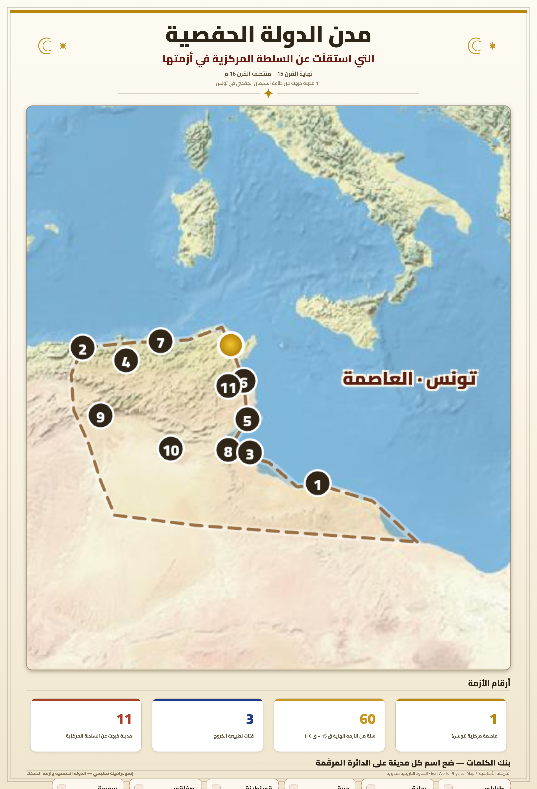
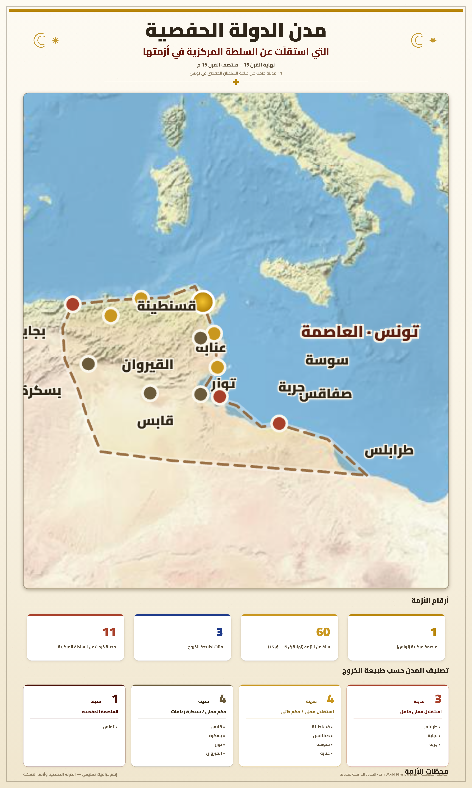

تمارين – أزمة الدولة الحفصية في القرن السادس عشر
- أزمة الدولة الحفصية:
- أزمة شاملة اقتصادية واجتماعية وسياسية عاشتها الدولة الحفصية منذ أواخر القرن 15 (1488)، تمثلت في تراجع الفلاحة والحرف والقطاع التجاري، وتفكك المجتمع، وانحلال السلطة المركزية، وأدت إلى إضعاف الدولة وتهديد كيانها.
- الطرق الصوفية:
- تنظيمات دينية إسلامية تقوم على الزهد والتصوف، انتشرت في البلاد التونسية خاصة في أواخر القرن 15 والقرن 16 في ظل انعدام الأمن وتصاعد الخطر المسيحي، حيث لجأ السكان إلى الزوايا الصوفية بحثًا عن الطمأنينة والأمان الروحي.
- ابن عرفة:
- شيخ إسلامي بارز في العهد الحفصي، أصدر فتاوى تحث على مقاتلة الأعراب، مما ساهم في تعميق التوتر الاجتماعي بين السكان المستقرين والقبائل الرحل وشبه الرحل في أواخر العهد الحفصي.
- الطريقة الشابية:
- حركة دينية وسياسية بالقيروان، مثّلت قوة انفصالية داخلية بلغ بها خطر القبائل أوجه في أواخر العهد الحفصي، مما زاد في إضعاف السلطة المركزية للدولة الحفصية.
| القطاع | درجة التراجع (%) |
|---|---|
| النشاط الفلاحي | 70 |
| الإنتاج الحرفي | 60 |
| القطاع التجاري | 80 |
المصدر: تقديرات مبنية على مؤشرات الأزمة الاقتصادية بالعهد الحفصي


تمثلت مظاهر تفكك السلطة السياسية في العهد الحفصي في: استقلال عديد المدن عن السلطة المركزية مثل عنابة وطرابلس وقسنطينة وجربة وصفاقس وسوسة، مما أدى إلى إضعاف الحكم المركزي؛ بروز قوى انفصالية داخلية بلغ خطر القبائل أوجه مع الطريقة الشابية بالقيروان؛ انحلال السلطة المركزية بسبب الصراعات بين أعضاء الأسرة الحاكمة لغياب قانون ينظم توارث الحكم؛ عجز بعض الحكام عن مواجهة الوضع الاقتصادي والاجتماعي المتفاقم؛ تفاقم الخطر الخارجي المتمثل في القوتين العثمانية والإسبانية.
- مقدمة: الدولة الحفصية وأزمة القرن 16.
- تطوير: أولاً. الأزمة الاقتصادية (تراجع الفلاحة والحرف والتجارة)؛ ثانياً. الأزمة الاجتماعية (تفكك المجتمع وانتشار التصوف)؛ ثالثاً. الأزمة السياسية (انحلال السلطة وتفاقم الخطر الخارجي).
- خاتمة: دولة مهددة في كيانها.
مقدمة
شهدت الدولة الحفصية منذ أواخر القرن 15 (1488) أزمة شاملة هددت كيانها على مختلف الأصعدة الاقتصادية والاجتماعية والسياسية.
تطوير
أولاً. الأزمة الاقتصادية
تراجع النشاط الفلاحي بفعل تدهور الأمن، وتدهور الإنتاج الحرفي بسبب ارتفاع الضرائب والمنافسة الأوروبية، كما تضرّر القطاع التجاري مع تحوّل الطرق التجارية من المتوسط إلى المحيط الأطلسي.
ثانياً. الأزمة الاجتماعية
تفكّك المجتمع إلى سكان مستقرين وبدو رحّل، وتوتّرت العلاقة بينهما، وتفكّك المجتمع الحضري نفسه، وساهمت فتاوى العلماء في تعميق الشقاق، وانتشرت الطرق الصوفية في ظل انعدام الأمن.
ثالثاً. الأزمة السياسية
انحلّت السلطة المركزية بسبب صراعات الأسرة الحاكمة، واستقلّت عديد المدن، وبرزت قوى انفصالية داخلية، وتفاقم الخطر الخارجي العثماني والإسباني.
خاتمة
هكذا أصبحت الدولة الحفصية في أواخر القرن 15 وبداية القرن 16 دولة مهددة في كيانها على جميع الأصعدة، مما جعلها مجالًا مفتوحًا للتدخلات الخارجية.
الخط الزمني: 1488: بداية الأزمة الشاملة ...